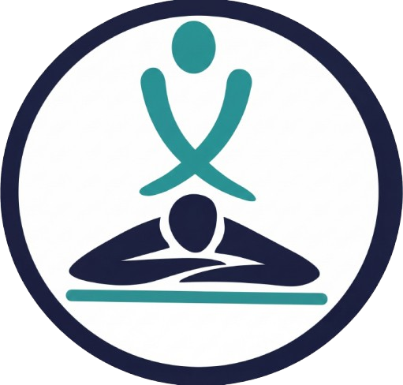
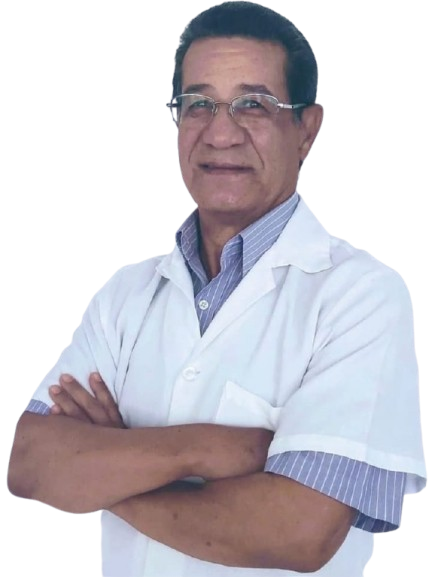
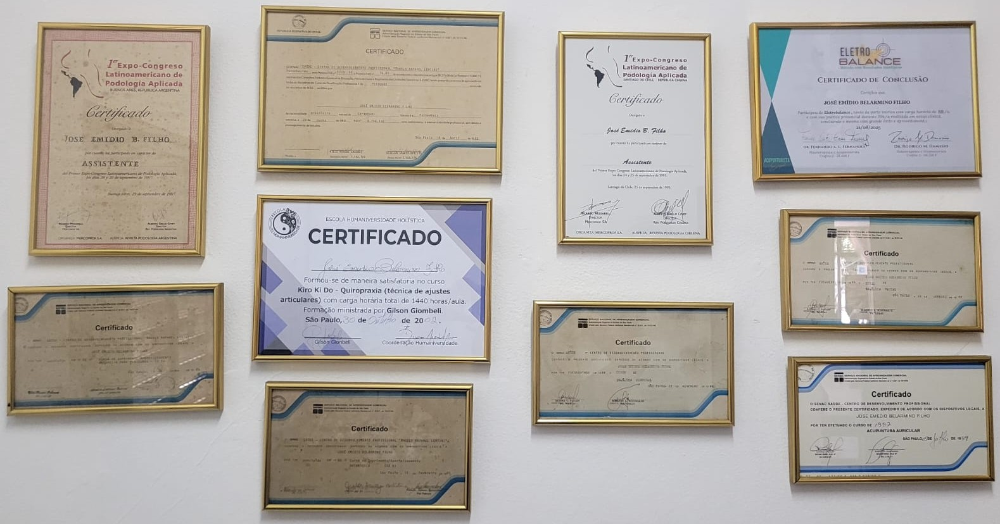

Emídio BelarminoRecupere sua qualidade de vida com Emídio Belarmino. Consultório especializado em alinhamento vertebral, massoterapia clínica e liberação miofascial para dor lombar, nervo ciático, hérnia de disco e tensão muscular — a 100 metros da Estação Autódromo.
AGENDE A SUA AVALIAÇÃO GRATUITA
Atendimento com hora marcada
(Terça à Sábado)
08h às 19h

Olá, eu sou Emídio Belarmino. Estruturei este consultório em Interlagos com um propósito claro: tratar a causa real das dores na coluna e musculares, devolvendo sua mobilidade e bem-estar de forma segura, precisa e sem depender de medicamentos.
Com uma trajetória sólida de mais de 25 anos de experiência na área da saúde e bem-estar, dedico minha carreira ao estudo e aplicação de terapias integrativas. Minha formação é pautada pela busca contínua por conhecimento, incluindo participações de destaque em congressos latino-americanos na República do Chile (1995) e na República Argentina (1997).
Iniciei minha capacitação técnica em 1989 com Acupuntura e Auriculoterapia pelo Senac, seguindo para especializações em Suplemento Ortopédico e Ortoníquia (1990). Ao longo dos anos, aprimorei minhas técnicas na Humaniversidade (Kiro Ki Do e Quiropraxia, 2002), no Centro de Estudos Shen Long (Acupuntura Sistêmica e Magnetoterapia) e, mais recentemente, certifiquei-me na técnica Eletro-Balance (Rio de Janeiro, 2022).
Como quiropraxista, acupunturista e massoterapeuta na Zona Sul de SP, busco o alinhamento vertebral e o equilíbrio integral para um tratamento duradouro.
Análise detalhada da sua postura, histórico de dor e rotina antes de iniciar qualquer ajuste ou manobra.
Combinação de ajuste quiroprático, acupuntura e liberação muscular para aliviar a dor já nas primeiras sessões.
Maca higienizada a cada paciente, materiais descartáveis e ambiente tranquilo com hora marcada em Interlagos.

Atendimento personalizado em Interlagos, SP. Cada sessão é adaptada para a sua queixa de dor ou bem-estar — selecione abaixo para agendar pelo WhatsApp:
Equilíbrio energético e alívio profundo de dores na coluna, ansiedade e inflamações com técnica milenar.
Estímulo da circulação sanguínea local para oxigenar a musculatura, reduzir inflamações e soltar costas travadas.
Ajustes articulares precisos para descomprimir nervos, aliviar dores nas costas, ciático e devolver a mobilidade.
Cervical, Dorsal e Lombar
Reequilíbrio bioenergético e neuromuscular através de estímulos elétricos suaves e precisos.
Potencializa o efeito analgésico e anti-inflamatório das agulhas com estímulos elétricos controlados.
Tratamento completo focando nos meridianos do corpo todo para dores crônicas e reequilíbrio integral.
Tratamento focado nos meridianos corporais para alívio de dores articulares e bem-estar geral.
Uso terapêutico de campos magnéticos nos pontos de acupuntura para regeneração e alívio de dores.
Massagem terapêutica clínica para soltar nódulos de tensão, aliviar dores nas costas, pescoço e ombros.
Técnica terapêutica que estimula pontos específicos no pavilhão auricular para dores, estresse e equilíbrio.
Técnicas manuais específicas para correção postural, descompressão vertebral e alívio de hérnia de disco.
Pressão terapêutica nos pontos dos meridianos para alívio rápido de tensões e dores agudas.
Pressão firme com os dedos nos canais de energia para relaxar a musculatura das costas e equilibrar o corpo.
Aplicação de técnicas orientais em pontos específicos do corpo para promover o equilíbrio completo da saúde.
Técnica manual suave para promover relaxamento profundo, reduzir o cansaço físico e restaurar o bem-estar.
Técnica manual profunda que destrava a fáscia muscular rígida, eliminando dores crônicas e contraturas.
Arraste para o lado para ver mais serviços
Aceitamos Pix, dinheiro, débito e crédito • Atendimento presencial com hora marcada em Interlagos, SP.